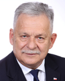

2026-06-22
Projekt wpłynął do Sejmu Druk nr 2737 ↗
w-senacieustawaRozpatrywanie na forum Sejmu stanowiska Senatu (2026-10-08)Sejm 10/2737
| Proces | Sejm kadencja 10, nr 2737 |
|---|---|
| Wpłynął | 2026-06-22 |
| Ostatnia zmiana źródła | 2026-10-09 |
| RCL | legislacja.rcl.gov.pl ↗ |
| Źródło | api.sejm.gov.pl ↗ |
919 zdarzeń

10. kadencja, 62. posiedzenie, 2. dzień - Sekretarz Stanu w Ministerstwie Sprawiedliwości Arkadiusz Myrcha 10. kadencja, 62. posiedzenie, 2. dzień (16-07-2026) 16. punkt porządku dziennego: Pierwsze czytanie rządowego projektu ustawy o zmianie ustawy - Kodeks spółek handlowych oraz ustawy o zmianie ustawy - Kodeks spółek handlowych oraz niektórych innych ustaw (druk nr 2737). Sekretarz Stanu w Ministerstwie Sprawiedliwości Arkadiusz Myrcha: Dziękuję. Panie Marszałku! Wysoka Izbo! Projekt zmian w Kodeksie spółek handlowych to kolejna propozycja w ramach trwających reform pod hasłem deregulacji wymiaru sprawiedliwości, funkcjonowania sądownictwa, w tym wypadku obszaru prawa gospodarczego, a dokładnie spółek kapitałowych. Przez ostatnie miesiące wielokrotnie mówiliśmy o cyfrowym wymiarze funkcjonowania sądów, o nowych propozycjach, nowych rozwiązaniach, które usprawniają funkcjonowanie tej części wymiaru sprawiedliwości. Już dzisiaj jesteśmy dumni z tego, że pierwsze kilkaset tysięcy pism jest kierowanych elektronicznie do sądów za pośrednictwem portalu informacyjnego. Jesteśmy dumni z tego, że rejestry sądowe dostępne są w telefonach komórkowych za pośrednictwem aplikacji mObywatel. Deregulacja ma jednak oczywiście szerszy wymiar. Przede wszystkim dotyczy obszaru gospodarczego. Propozycja, którą przedstawiamy, dotyczy ponad 0,5 mln podmiotów na polskim rynku kapitałowym, sp. z o.o., których jest ponad 600 tys., i mówi o odformalizowaniu konkretnych procesów, które dzisiaj wymagają formy pisemnej. Forma pisemna została wprowadzona do tych przepisów ponad 20 lat temu w dobie, kiedy jeszcze obrót cyfrowy z wykorzystaniem komunikatorów, narzędzi elektronicznych nie był oczywiście tak powszechny. Dzisiaj, jak doskonale zdajemy sobie sprawę, jest to podstawowe narzędzie funkcjonowania zarówno sektora prywatnego, jak i administracji publicznej. Propozycja, która jest zawarta w projekcie, dotyczy dwóch konkretnych obszarów. Z jednej strony jest kwestia udzielenia pełnomocnictwa do udziału w zgromadzeniu wspólników sp. z o.o., a druga propozycja dotyczy samej formy wyrażenia zgody na prowadzenie korespondencji drogą elektroniczną. Proszę zwrócić uwagę, że art. 238 Kodeksu spółek handlowych stanowi, że dopuszcza się elektroniczną komunikację pomiędzy wspólnikami, możliwość zawiadamiania drogą elektroniczną, o ile taka zgoda została uprzednio wyrażona w formie pisemnej. To rozwiązanie wydaje się zbyt daleko idące i niezwykle kłopotliwe, wymuszające wręcz w dzisiejszych realiach składanie własnoręcznych zgód na to, żeby przejść na drogę komunikacji elektronicznej. Kodeks cywilny w art. 772 wprowadza definicję tzw. formy dokumentowej, bardzo szeroko pojętej formy, która umożliwia złożenie oświadczenia woli w sposób umożliwiający zidentyfikowanie autora składającego oświadczenie. Tak więc może to być zarówno forma pisemna, jak i forma elektroniczna, w ramach tego mailowa, każda, która jest przez stronę akceptowalna i umożliwia identyfikację strony. Tak więc ułatwiamy, usprawniamy, wyłączamy czy ograniczamy te przestrzenie, w których przepisy wymagają jeszcze formy papierowej. Ale tu ważne zastrzeżenie. Jeżeli oczywiście wspólnicy w danej spółce będą mieli taką wolę, takie życzenie, żeby te formy komunikacji czy składania zgód, udzielania pełnomocnictwa miały jednak surowsze wymagania, to oczywiście przepisy, które proponujemy, dają taką możliwość. Te zmiany dotyczące art. 238, art. 243 czy art. 300 wprowadzają pewien minimalny standard dotyczący tych regulacji, z tym zastrzeżeniem, że oczywiście umowa spółki może wprowadzać dużo dalej idące, czyli dużo surowsze, wymagania co do składania konkretnych oświadczeń - z tymi najdalej idącymi, czyli zastrzeżeniem nieważności w sytuacji niezachowania odpowiedniej formy. Wydaje się, że projekt nie będzie wzbudzał większych kontrowersji. Został przekonsultowany ze stroną publiczną i oczywiście został przez nią zaopiniowany i tak jak wspomniałem na samym początku, jest owocem współpracy ze śro
10. kadencja, 62. posiedzenie, 2. dzień - Poseł Grzegorz Lorek 10. kadencja, 62. posiedzenie, 2. dzień (16-07-2026) 16. punkt porządku dziennego: Pierwsze czytanie rządowego projektu ustawy o zmianie ustawy - Kodeks spółek handlowych oraz ustawy o zmianie ustawy - Kodeks spółek handlowych oraz niektórych innych ustaw (druk nr 2737). Poseł Grzegorz Lorek: Szanowny Panie Marszałku! Szanowny Panie Ministrze! Wysoka Izbo! Najkrócej ten projekt można opisać słowami nie: deregulacja, ale: regulacja digitalizacji i informatyzacji. Dyskutowałbym, czy on dotyczy spółek polskich, bardziej widzę tu korporacje międzynarodowe, bo na ułatwienia, które proponuje ten projekt, na pewno przychylnym okiem spojrzą korporacje. Proponuje się zmiany umożliwiające stosowanie formy dokumentowej, w tym komunikacji elektronicznej. Regulacja przewiduje możliwość wprowadzenia surowszej formy w umowie. Ponadto postulat dotyczący zmiany w art. 238 § 1 k.s.h. zmierza do zastąpienia wymogu wyrażenia przez wspólnika pisemnej zgody na doręczenie zawiadomień o zgromadzeniu wspólników drogą elektroniczną zgodą wyrażoną w formie dokumentowej. Przekształcenie tej zgody w zgodę dokumentową pozwoliłoby zrealizować jej funkcję w sposób dostosowany do realów cyfrowych, i o to chodzi, przy jednoczesnym zachowaniu istotnego elementu identyfikacji osoby składającej oświadczenie. Wymaga podkreślenia, że w zmianach w art. 238 § 1 k.s.h. przewidziane jest, że umowa spółki może przewidywać surowsze warunki udzielenia zgody. Tylko czy to wystarczy. Z kolei postulaty zmiany art. 243 § 2 k.s.h. zmierzają do umożliwienia udzielenia pełnomocnictwa do udziału w zgromadzeniu wspólników w formie dokumentowej. Uzasadnienie tej propozycji opiera się na realiach funkcjonowania współczesnych spółek kapitałowych, w których częściej zarówno komunikacja między wspólnikami, jak i samo odbywanie zgromadzeń przybiera formę zdalną. Tradycyjny wymóg formy pisemnej rozumianej jako dokument opatrzony własnoręcznym podpisem lub kwalifikowanym podpisem elektronicznym okazuje się w praktyce zbyt rygorystyczny, nieprzystający do potrzeb rynku i stanowi barierę, zwłaszcza dla inwestorów zagranicznych. Forma dokumentowana, uregulowana w Kodeksie cywilnym, pozwala na złożenie oświadczenia w dowolnej utrwalonej postaci, jak e-mail czy plik PDF, o ile możliwa jest identyfikacja osoby, która je złożyła. Zaproponowana zmiana stanowi odpowiedź na trudności, jakie napotykają wspólnicy chcący udzielić pełnomocnictwa zdalnie, bez konieczności fizycznego od podpisu. Jednocześnie konstrukcja, w której dopuszczenie formy surowszej niż dokumentowa uzależnione jest od woli samych wspólników wyrażonej w umowie spółki, zachowuje elastyczność i pozwala każdej spółce dostosować mechanizmy identyfikacyjne. Projektowana regulacja nie nakłada na spółki obowiązku dostosowania ani zmiany obowiązujących umów spółek. Ewentualna modyfikacja umowy spółki może nastąpić wyłącznie w sposób dobrowolny - tu też mam wątpliwości - jeżeli wspólnicy uznają za zasadne skorzystanie z nowego uprawnienia przewidzianego w projektowanym przepisie. Regulacja ma zatem charakter fakultatywny i kreuje jedynie możliwość wprowadzenia do umowy spółki postanowień dopuszczających stosowanie formy dokumentowej. Kolejna zmiana ma na celu zapewnienie spójności kodeksowej regulacji wykonywania praw udziałowych przez pełnomocnika w spółkach kapitałowych niepublicznych oraz utrzymania deregulacyjnego charakteru projektowanych rozwiązań. Wprowadzenie formy dokumentowej jako podstawowego standardu udzielania pełnomocnictwa odpowiada utrwalonej praktyce obrotu, w której oświadczenia korporacyjne są składane i archiwizowane w postaci elektronicznej, a weryfikacja ich pochodzenia następuje przy wykorzystaniu środków komunikacji na odległość. Jednocześnie rezygnacja z ustawowego rygoru nieważności dla niezachowania formy dokumentowej ogranicza ryzyko nadmierne formalistycznych skutków w sytuacjach, w których umocowanie pełnomocnika jest w istocie niewątpl
10. kadencja, 62. posiedzenie, 2. dzień - Poseł Zdzisław Gawlik 10. kadencja, 62. posiedzenie, 2. dzień (16-07-2026) 16. punkt porządku dziennego: Pierwsze czytanie rządowego projektu ustawy o zmianie ustawy - Kodeks spółek handlowych oraz ustawy o zmianie ustawy - Kodeks spółek handlowych oraz niektórych innych ustaw (druk nr 2737). Poseł Zdzisław Gawlik: Szanowny Panie Marszałku! Szanowny Panie Ministrze! Klub poselski Koalicji Obywatelskiej uznaje za w pełni uzasadniony, potrzebny, eliminujący niepotrzebne bariery i równocześnie ułatwiający życie projekt ustawy z druku nr 2737 i w pełni, z pełnym przekonaniem ten projekt popiera. Przedmiotowy projekt ustawy dotyczący zmiany ustawy Kodeks spółek handlowych oraz zmiany ustawy - Kodeks spółek handlowych oraz niektórych innych ustaw obejmuje zmiany w obszarze funkcjonowania jednej ze spółek kapitałowych, jaką jest spółka z ograniczoną odpowiedzialnością. Zaproponowane zmiany są konsekwencją postępujących zmian w obrębie technologii cyfrowych i pojawiających się w związku z tym nowych technologii komunikowania się, zwłaszcza na odległość, i wymiany informacji w obrocie gospodarczym. Wykorzystując te nowe rozwiązania, projektodawca stara się je wprzęgnąć w działalność podmiotu, zwłaszcza co do sposobu wyrażania woli, również w odniesieniu do podmiotów prowadzących działalność gospodarczą, tym samym poprawiając i usprawniając proces podejmowania decyzji. Zmiany te stanowią przesłankę rezygnacji z daleko posuniętego formalizmu w dziedzinie zwoływania zgromadzeń oraz w kwestii pełnomocnictwa do uczestnictwa w zgromadzeniu wspólników spółki z ograniczoną odpowiedzialnością. Dotychczasowe przepisy uzależniały skuteczność wskazanych wcześniej zdarzeń, czyli zawiadomień i pełnomocnictw, od zachowania szczególnej formy pisemnej. Odejście od tak daleko posuniętego formalizmu prawnego skutkuje możliwością ograniczenia kosztów i barier, zwłaszcza dostrzeganych przez podmioty zagraniczne. I tutaj absolutnie nie chciałbym się zgodzić z wypowiedziami mojego przedmówcy, pana posła Lorka, o tym, że są to przepisy dedykowane dla podmiotów zagranicznych. To tak jakbyśmy powiedzieli, że dla podmiotu polskiego, polskiego akcjonariusza, wspólnika, obca jest wymiana elektroniczna i postęp cyfrowy, jeżeli chodzi o wymianę informacji. Proponowane zmiany zastąpienia dotychczasowej formy pisemnej formą dokumentową, w tym formą elektroniczną, niewątpliwie odpowiadają realiom współczesnego obrotu, a możliwość zdalnego udzielenia pełnomocnictwa daleko ułatwia życie. Równocześnie ja bym tu również nie dywagował, jeżeli chodzi o kwestię vacatio legis, ponieważ proponowane zmiany są jedynie prawem, a nie obowiązkiem. Im wcześniej takie prawo pojawi się dla wspólników, dla spółki, tym wcześniej będą z tych możliwości mieli okazję skorzystać. To stopień zaufania korporacyjnego będzie determinował okoliczność i decyzję o ewentualnym skorzystaniu z proponowanych zmian wprowadzanych tą ustawą. Jeżeli chodzi o te zmiany, to równocześnie wychodzą one naprzeciw potrzebom życia gospodarczego i po prostu pewnym tendencjom, które są zauważone w podmiotach gospodarczych, gdzie dotychczasowy model gromadzenia dokumentacji w formie papierowej jest zastępowany modelem cyfrowym. Jeżeli chodzi o proponowane zmiany, to trzeba pamiętać, że nie pozbawiają one prawa korzystania z dotychczasowej autonomii. Można tym samym przewidzieć w umowie surowsze warunki udzielania zgody niż te, jakie są dopuszczalne w ramach zakładanej nowelizacji. Podsumowując, jeżeli chodzi o proponowane zmiany, to po pierwsze, czynią w obrębie prawa prywatnego system coraz bardziej spójny. Forma dokumentowa, o której wspominał pan minister, została wprowadzona do Kodeksu cywilnego art. 772 Kodeksu cywilnego, przy czym zauważę, że forma dokumentowa została wprowadzona do Kodeksu cywilnego ustawą z dnia 10 lipca 2015 r. Mogę wyrazić uczucie żalu, że po prostu tak długo czekano, żeby stworzyć wspólnikom spółki z ograniczoną odpowiedzialnością możliwoś
10. kadencja, 62. posiedzenie, 2. dzień - Poseł Mirosław Adam Orliński 10. kadencja, 62. posiedzenie, 2. dzień (16-07-2026) 16. punkt porządku dziennego: Pierwsze czytanie rządowego projektu ustawy o zmianie ustawy - Kodeks spółek handlowych oraz ustawy o zmianie ustawy - Kodeks spółek handlowych oraz niektórych innych ustaw (druk nr 2737). Poseł Mirosław Adam Orliński: Szanowny Panie Marszałku! Panie Ministrze! Wysoka Izbo! Szanowni Państwo! W imieniu Klubu Parlamentarnego Polskie Stronnictwo Ludowe przedstawię nasze stanowisko wobec rządowego projektu ustawy o zmianie ustawy - Kodeks spółek handlowych oraz ustawy o zmianie ustawy - Kodeks spółek handlowych oraz niektórych innych ustaw. Tak jak powiedział pan prof. Gawlik, i tutaj można się podpisać pod tymi słowami, ten projekt, który przyjęła Rada Ministrów, w dużej mierze jest projektem deregulacyjnym, upraszczającym zasady funkcjonowania spółek z ograniczoną odpowiedzialnością i dostosowującym je do obrotu cyfrowego. Zmiany mają ułatwić prowadzenie firm, w szczególności w sytuacjach, gdy wspólnicy kontaktują się zdalnie lub przebywają za granicą. Nowe przepisy ograniczają wymogi dotyczące papierowych dokumentów i podpisów oraz umożliwiają częstsze korzystanie z formy elektronicznej, a także skanów dokumentów, co jest wyraźnie zapisane w projekcie. W przypadku tej deregulacji warto zauważyć, że zastosowano takie, powiedziałbym, proste podejście, ale także doprecyzowujące tę całą materię. Ograniczenie wymogów dotyczących papierowych dokumentów, które składamy, oraz podpisów umożliwia częstsze korzystanie z formy elektronicznej. Wiemy, że w dzisiejszym świecie to korzystanie z form elektronicznych, funkcjonowanie w taki sposób tak naprawdę jest wymagane oraz oczekiwane. Cyfryzacja tego procesu postępuje i, czy to nam się podoba, czy nie, to dzisiaj ten kierunek jest jak najbardziej wymagany i oczekiwany. Nazwałbym to takim uproszczeniem. Te rozwiązania, które tutaj są zapisane, są rozwiązaniami czytelnymi, jak np. wymóg pisemnej zgody, przewidziany w art. 238 § 1 k.s.h., odnoszący się do formy zgody wspólnika na doręczanie zawiadomień o zwołaniu zgromadzeń wspólników spółki z ograniczoną odpowiedzialnością oraz pisemnego pełnomocnictwa. Wynika to z przepisów dotyczących formy pełnomocnictwa do uczestnictwa w zgromadzeniu wspólników spółki z ograniczoną odpowiedzialnością. Przecież to generuje nieuzasadnione koszty i pewne bariery, dlatego jest to jak najbardziej wyjście naprzeciw oczekiwaniom. Krótko, bo wydaje się, że ten projekt w pełni zasługuje na poparcie. Jest on projektem, który wychodzi naprzeciw temu, czego też powinniśmy oczekiwać od prawa i od zmian w prawie, które przygotowujemy i które są również przygotowywane przez ministerstwo - aby one ułatwiały, upraszczały i spełniały oczekiwania. To są zmiany, które jak najbardziej jako Klub Parlamentarny Polskie Stronnictwo Ludowe popieramy. Dziękuję. Przebieg posiedzenia
10. kadencja, 62. posiedzenie, 2. dzień - Poseł Jarosław Sachajko 10. kadencja, 62. posiedzenie, 2. dzień (16-07-2026) 16. punkt porządku dziennego: Pierwsze czytanie rządowego projektu ustawy o zmianie ustawy - Kodeks spółek handlowych oraz ustawy o zmianie ustawy - Kodeks spółek handlowych oraz niektórych innych ustaw (druk nr 2737). Poseł Jarosław Sachajko: Panie Marszałku! Wysoka Izbo! Kierunek tej ustawy jest właściwy. Prawo spółek nie może pozostać w świecie papierowych dokumentów, jeżeli przedsiębiorcy na co dzień komunikują się elektronicznie, a zgromadzenia wspólników coraz częściej odbywają się zdalnie. Dlatego popieramy możliwość wyrażenia w formie dokumentowej zgody na elektroniczne zawiadomienie o zgromadzeniu. E-mail albo inna utrwalona wiadomość może skutecznie zastąpić dodatkowy dokument z własnoręcznym podpisem. To realne uproszczenie, szczególnie dla małych i średnich przedsiębiorstw oraz spółek mających wspólników za granicą. Podobnie należy dopuścić wprowadzenie elektronicznego pełnomocnictwa. Nie ma racjonalnego powodu, aby wspólnik przebywający setki kilometrów od siedziby spółki musiał przesyłać papierowy oryginał, skoro jego wolę można utrwalić i szybko przekazać drogą elektroniczną. Ale deregulacja nie może oznaczać rezygnacji z bezpieczeństwa obrotów. Pełnomocnictwo daje prawo uczestniczenia w zgromadzeniu i głosowaniu cudzymi udziałami. Na jego podstawie można odwołać zarząd, zmienić umowę spółki, podwyższyć kapitał albo zdecydować o majątku przedsiębiorstwa. Sfałszowany skan, przejęta skrzynka pocztowa czy wiadomość wysłana przez osobę nieuprawnioną mogą wywołać bardzo poważne skutki. Dlatego ustawa powinna utrzymać formę dokumentową, ale jednocześnie zachować rygor nieważności w przypadku jej niezachowania. Potrzebny jest także minimalny standard weryfikacji: pełnomocnictwo wysłane z wcześniej wskazanego adresu, kontakt zwrotny ze wspólnikiem albo inne proporcjonalne potwierdzenie jego autentyczności. Niepokoi również usunięcie wyraźnego obowiązku weryfikacji w przypadku prostej spółki akcyjnej. Ministerstwo twierdzi, że wystarczą ogólne zasady należytej staranności. Dla dużej korporacji - być może tak, ale dla małej, rodzinnej spółki bez obsługi prawnej może to oznaczać niepewność i wieloletni spór sądowy. 30-dniowe vacatio legis także jest zbyt krótkie. Spółki, które chcą utrzymać surowsze wymagania, muszą mieć umowę i uzyskać wpis do KRS. Powinny otrzymać co najmniej 3 miesiące na przygotowanie procedur. Poprzemy uproszczenie prawa, ale oczekujemy poprawy. Cyfryzacja ma usunąć zbędny papier, a nie usunąć zabezpieczenie przed oszustwem. Deregulacja ma ułatwić prowadzenie firmy, a nie ułatwić przejmowanie nad nią kontroli. Dziękuję. Przebieg posiedzenia
10. kadencja, 62. posiedzenie, 2. dzień - Poseł Włodzimierz Skalik 10. kadencja, 62. posiedzenie, 2. dzień (16-07-2026) 16. punkt porządku dziennego: Pierwsze czytanie rządowego projektu ustawy o zmianie ustawy - Kodeks spółek handlowych oraz ustawy o zmianie ustawy - Kodeks spółek handlowych oraz niektórych innych ustaw (druk nr 2737). Poseł Włodzimierz Skalik: Szanowny Panie Marszałku! Panie Ministrze! Wysoka Izbo! Rozpatrywany projekt dotyczy dość wąskiego spektrum przepisów odnoszących się do problemu, z którym przedsiębiorcy spotykają się każdego dnia, ponieważ komunikacja wewnątrz firmy, wśród członków zarządu, udziałowców, akcjonariuszy jest chlebem codziennym w życiu firm. Rzeczywiście ułatwienie, umożliwienie tej komunikacji z wykorzystaniem systemów informatycznych jest dobrym rozwiązaniem, natomiast Konfederacja Korony Polskiej stoi na stanowisku, że powinna być zachowana wolność wyboru sposobu i formy tejże komunikacji. Przedsiębiorcy, udziałowcy, akcjonariusze sami powinni przesądzić, czy chcą korzystać z tradycyjnej formy komunikacji, czy też z formy elektronicznej. Ten projekt pozwala wspólnikom, udziałowcom wyrazić swoje zdanie, stanowisko w formie dokumentowej - możliwe jest również zawiadomienie o zwołaniu zgromadzenia - i udzielić pełnomocnictwa z wykorzystaniem formy elektronicznej. Tak, to jest dobre rozwiązanie. Sam jako przedsiębiorca dość intensywnie korzystam z elektronicznej komunikacji, natomiast uważam, że państwo nie powinno narzucać przedsiębiorcy tej formy komunikacji. Trzeba pamiętać, że uproszczenie nie może oznaczać rezygnacji z bezpieczeństwa, a forma elektroniczna rodzi konkretne ryzyka. W przypadku konfliktu wspólników może się pojawić pytanie, kto wysłał wiadomość, czy pełnomocnictwo było aktualne, czy nie zostało odwołane i czy skrzynka pocztowa nie została przejęta. Dlatego projekt powinien zostać uzupełniony o zasady, które wyłączają te ryzyka. Wspólnik spółki powinien jasno wskazać adres służący do komunikacji ze spółką. Zmiana adresu i cofnięcie zgody powinny być skuteczne od chwili ich doręczenia spółce. Elektroniczne pełnomocnictwa powinny być archiwizowane razem z dokumentacją zgromadzenia. Nie chodzi o stworzenie nowych barier. Chodzi o to, aby deregulacja nie zmieniała kosztów przesyłki kurierskiej w koszty (Dzwonek) wieloletniego procesu sądowego. Konfederacja Korony Polskiej popiera usuwanie zbędnego formalizmu i ułatwianie prowadzenia polskich firm. Dziękuję bardzo. Przebieg posiedzenia
10. kadencja, 62. posiedzenie, 2. dzień - Poseł Lidia Czechak 10. kadencja, 62. posiedzenie, 2. dzień (16-07-2026) 16. punkt porządku dziennego: Pierwsze czytanie rządowego projektu ustawy o zmianie ustawy - Kodeks spółek handlowych oraz ustawy o zmianie ustawy - Kodeks spółek handlowych oraz niektórych innych ustaw (druk nr 2737). Poseł Lidia Czechak: Szanowny Panie Marszałku! Panie Ministrze! Mam trzy pytania. Przedsiębiorcy od lat wskazują, że nadmierny formalizm i obowiązek gromadzenia papierowej dokumentacji generują niepotrzebne koszty i zabierają czas, który powinni przeznaczać na rozwój swoich firm. Projekt umożliwia szersze wykorzystanie poczty elektronicznej i dokumentów cyfrowych w funkcjonowaniu spółek. Mam pytanie: Jakie konkretne oszczędności i ułatwienia dla mikro-, małych i średnich przedsiębiorców przyniosą proponowane zmiany? Cyfryzacja obrotu gospodarczego jest dziś koniecznością, jednak wraz z ułatwieniami pojawiają się pytania o bezpieczeństwo i ryzyko nadużyć. Projekt umożliwia m.in. udzielenie pełnomocnictwa do udziału w zgromadzeniu wspólników w formie dokumentowej, np. za pośrednictwem poczty elektronicznej. W jaki sposób zostanie zapewniona skuteczna identyfikacja osoby udzielającej takiego pełnomocnictwa i ochrona wspólników przed ewentualnym podszywaniem się pod takie osoby? Projekt ma charakter deregulacyjny i - jak wskazano w uzasadnieniu - powinien korzystnie wpływać szczególnie na mikro-, małe i średnie przedsiębiorstwa. Mam więc pytanie. (Dzwonek) Przedsiębiorcy pytają mnie, czy to jest element szerszego planu upraszczania prawa dla polskich firm, ponieważ uważają, że ta deregulacja idzie zbyt wolno i ma zbyt mały zakres. Dziękuję bardzo. (Oklaski) Przebieg posiedzenia
10. kadencja, 62. posiedzenie, 2. dzień - Poseł Małgorzata Pępek 10. kadencja, 62. posiedzenie, 2. dzień (16-07-2026) 16. punkt porządku dziennego: Pierwsze czytanie rządowego projektu ustawy o zmianie ustawy - Kodeks spółek handlowych oraz ustawy o zmianie ustawy - Kodeks spółek handlowych oraz niektórych innych ustaw (druk nr 2737). Poseł Małgorzata Pępek: Panie Marszałku! Wysoka Izbo! To kolejna dobra deregulacyjna ustawa. Cieszy fakt, że ta cała machina upraszczania polskiego prawa nie zwalnia tempa i z każdym krokiem konsekwentnie ułatwiamy życie polskim przedsiębiorcom. Tym razem likwidujemy absurdalny wymóg papierowego podpisu czy podpisu kwalifikowanego przy zwoływaniu zgromadzeń wspólników i udzielaniu pełnomocnictw w spółkach z ograniczoną odpowiedzialnością, zastępując go zwykłą formą dokumentową. Przejście na formę elektroniczną w codziennych sprawach korporacyjnych to gigantyczna oszczędność czasu i pieniędzy dla setek tysięcy firm. Dlatego proponowane rozwiązania zasługują na pełne poparcie jako istotny krok w kierunku budowy nowoczesnego, przyjaznego i cyfrowego państwa. Proszę o odpowiedź na pytanie: W jakich (Dzwonek) obszarach działalności spółek kapitałowych resort dostrzega największy potencjał optymalizacyjny dzięki rezygnacji z tradycyjnych papierowych zawiadomień? Dziękuję. (Oklaski) Przebieg posiedzenia
10. kadencja, 62. posiedzenie, 2. dzień - Poseł Grzegorz Lorek 10. kadencja, 62. posiedzenie, 2. dzień (16-07-2026) 16. punkt porządku dziennego: Pierwsze czytanie rządowego projektu ustawy o zmianie ustawy - Kodeks spółek handlowych oraz ustawy o zmianie ustawy - Kodeks spółek handlowych oraz niektórych innych ustaw (druk nr 2737). Poseł Grzegorz Lorek: Szanowny Panie Marszałku! Szanowny Panie Ministrze! Mam prośbę o jasne stwierdzenie, że spółki będą mieć do wyboru wersję elektroniczną i wersję papierową. Czy dobrze to rozumiem? Proszę o wypowiedź w tej sprawie. Dziękuję. Przebieg posiedzenia
10. kadencja, 62. posiedzenie, 2. dzień - Poseł Jarosław Sachajko 10. kadencja, 62. posiedzenie, 2. dzień (16-07-2026) 16. punkt porządku dziennego: Pierwsze czytanie rządowego projektu ustawy o zmianie ustawy - Kodeks spółek handlowych oraz ustawy o zmianie ustawy - Kodeks spółek handlowych oraz niektórych innych ustaw (druk nr 2737). Poseł Jarosław Sachajko: Panie Marszałku! Wysoka Izbo! Panie Ministrze! Mam pytania dotyczące tematów, które poruszałem w stanowisku w imieniu koła. Jak spółka ma zweryfikować, czy przesłany e-mail, skan lub wiadomość rzeczywiście pochodzą od wspólnika, jeżeli projekt nie określa żadnego minimalnego standardu uwierzytelniania? Dlaczego spółki otrzymują tylko 30 dni na dostosowanie umów i procedur, skoro utrzymanie surowszej formy pełnomocnictwa może wymagać zwołania zgromadzenia, zmiany umowy spółki oraz konstytutywnego wpisu do KRS? Dziękuję. Przebieg posiedzenia
10. kadencja, 62. posiedzenie, 2. dzień - Poseł Michał Kowalski 10. kadencja, 62. posiedzenie, 2. dzień (16-07-2026) 16. punkt porządku dziennego: Pierwsze czytanie rządowego projektu ustawy o zmianie ustawy - Kodeks spółek handlowych oraz ustawy o zmianie ustawy - Kodeks spółek handlowych oraz niektórych innych ustaw (druk nr 2737). Poseł Michał Kowalski: Bardzo dziękuję, panie marszałku. Panie Marszałku! Wysoka Izbo! Z uwagą podchodzimy do każdego rozwiązania, które rzeczywiście upraszcza prowadzenie działalności gospodarczej i ogranicza zbędną biurokrację. Z uwagi na to, że dzisiaj procedujemy właśnie nad tym projektem, jest to pierwsze czytanie, chciałbym wyraźnie podkreślić, że przedsiębiorcy oczekują od państwa prostych, przejrzystych i nowoczesnych przepisów. Każda zmiana, która pozwala zaoszczędzić czas, ograniczyć koszty i usprawnić podejmowanie decyzji w spółkach, zwłaszcza gdy wspólnicy działają w różnych miejscach w kraju czy za granicą, zasługuje na merytoryczną analizę. Jednocześnie będziemy zwracać uwagę, aby cyfryzacja nie odbyła się kosztem bezpieczeństwa obrotu gospodarczego, pewności prawa oraz właściwej ochrony wspólników i wierzycieli. Deregulacja powinna oznaczać likwidację zbędnych obowiązków, a nie osłabienie bezpieczeństwa prowadzenia działalności. Dlatego w toku prac parlamentarnych będziemy analizować proponowane rozwiązania i zgłaszać ewentualne uwagi, jeśli się okażą konieczne. Dziękuję bardzo. Przebieg posiedzenia
10. kadencja, 62. posiedzenie, 2. dzień - Poseł Włodzimierz Skalik 10. kadencja, 62. posiedzenie, 2. dzień (16-07-2026) 16. punkt porządku dziennego: Pierwsze czytanie rządowego projektu ustawy o zmianie ustawy - Kodeks spółek handlowych oraz ustawy o zmianie ustawy - Kodeks spółek handlowych oraz niektórych innych ustaw (druk nr 2737). Poseł Włodzimierz Skalik: Szanowny Panie Marszałku! Panie Ministrze! Wysoka Izbo! Kilka pytań. Dlaczego dla projektu nie sporządzono pełnej oceny skutków regulacji? Czy wysłanie wiadomości z dowolnego adresu e-mail będzie wystarczające? Jak należy postąpić, gdy spółka otrzyma kilka sprzecznych pełnomocnictw? Jak wspólnik będzie mógł skutecznie cofnąć zgodę na elektroniczne zawiadomienia? Kiedy zmiana adresu do doręczeń elektronicznych stanie się skuteczna wobec spółki? Co powinien zrobić zarząd po otrzymaniu komunikatu, że zawiadomienie nie zostało dostarczone? Dziękuję bardzo. Przebieg posiedzenia
10. kadencja, 62. posiedzenie, 2. dzień - Poseł Barbara Dolniak 10. kadencja, 62. posiedzenie, 2. dzień (16-07-2026) 16. punkt porządku dziennego: Pierwsze czytanie rządowego projektu ustawy o zmianie ustawy - Kodeks spółek handlowych oraz ustawy o zmianie ustawy - Kodeks spółek handlowych oraz niektórych innych ustaw (druk nr 2737). Poseł Barbara Dolniak: Panie Marszałku! Wysoka Izbo! W poprzedniej kadencji PiS wprowadził nowelizację Kodeksu spółek handlowych mimo jednoznacznego sprzeciwu ekspertów. W zasadzie można powiedzieć, że powinien się ukazać projekt ustawy mający jeden artykuł: uchyla się poprzednie zmiany. Tak wyglądała modyfikacja przepisu przez poprzednią władzę. Obecny projekt idzie w dobrą stronę. Upraszcza funkcjonowanie spółek. Zamiast niepotrzebnej biurokacji, a w zasadzie zamiast biurokracji, więcej elektronicznej komunikacji, która przyspiesza postępowanie. W związku z tym mam pytanie: Czy to początek zmian Kodeksu spółek handlowych i czy ministerstwo przewiduje dalsze projekty mające na celu stworzenie ustawy - Kodeks spółek handlowych, która wyeliminuje prawną niejasność i niepewność dla przedsiębiorców i kiedy możemy się takiego projektu spodziewać? (Oklaski) Przebieg posiedzenia
10. kadencja, 62. posiedzenie, 2. dzień - Poseł Danuta Jazłowiecka 10. kadencja, 62. posiedzenie, 2. dzień (16-07-2026) 16. punkt porządku dziennego: Pierwsze czytanie rządowego projektu ustawy o zmianie ustawy - Kodeks spółek handlowych oraz ustawy o zmianie ustawy - Kodeks spółek handlowych oraz niektórych innych ustaw (druk nr 2737). Poseł Danuta Jazłowiecka: Dziękuję, panie marszałku. Panie Marszałku! Panie Ministrze! Wysoka Izbo! Cyfrowe realia zmieniają nam życie we wszystkich jego aspektach, w tym w biznesie. Omawiany projekt wprowadza unowocześnienie procedur, znoszenie barier papierowych czy wymogów fizycznego podpisu pod pełnomocnictwami. Wprowadza autonomię korporacyjną. Ale jak często bywa, zmiany powodują wątpliwości, obawy, pytania. Panie Ministrze! Proszę o odpowiedź na kilka pytań. Jakie mechanizmy zabezpieczające przed podszyciem się pod wspólnika przewidziano w sytuacji, gdy np. zgoda na zwołanie zgromadzenia wspólników lub pełnomocnictwo będą przesłane zwykłym e-mailem lub skanem bez podpisu elektronicznego? Jakie projektowane przepisy wpłyną na zakres odpowiedzialności członków zarządu w przypadku zakwestionowania przez jednego ze wspólników skuteczności doręczenia zawiadomienia o zgromadzeniu wysyłanego drogą elektroniczną? W jaki sposób sądy rejestrowe i organy spółek będą weryfikować (Dzwonek) autentyczność wiadomości przesyłanych w formie elektronicznej, aby uniknąć sporów prawnych dotyczących ważności podejmowanych uchwał? Jakie koszty administracyjne zdaniem ministerstwa poniosą małe i średnie spółki z ograniczoną odpowiedzialnością w związku z dostosowaniem wewnętrznych regulaminów do nowych rozwiązań deregulacyjnych? I ostatnie pytanie. Czy rezygnacja z wymogu formy pisemnej lub kwalifikowanego podpisu na rzecz prostych form cyfrowych rzeczywiście wpłynie na realne skrócenie czasu rejestracji zmian w Krajowym Rejestrze Sądowym? Dziękuję. Przebieg posiedzenia
10. kadencja, 62. posiedzenie, 2. dzień - Poseł Dorota Marek 10. kadencja, 62. posiedzenie, 2. dzień (16-07-2026) 16. punkt porządku dziennego: Pierwsze czytanie rządowego projektu ustawy o zmianie ustawy - Kodeks spółek handlowych oraz ustawy o zmianie ustawy - Kodeks spółek handlowych oraz niektórych innych ustaw (druk nr 2737). Poseł Dorota Marek: Panie Marszałku! Panie Ministrze! Wysoka Izbo! Z pełnym przekonaniem popieram projekt nowelizacji Kodeksu spółek handlowych. To kolejne kluczowe ogniwo naszej wielkiej ofensywy deregulacyjnej. Wprowadzamy standardy cyfrowe, zastępując uciążliwy papier formą dokumentową, co dla przedsiębiorców oznacza realne oszczędności czasu i pieniędzy. Ostatnio czytałam o pakiecie deregulacyjnym, który przyjmuje niemiecki rząd. U naszych zachodnich sąsiadów to spóźniona reakcja na rodzący się kryzys gospodarczy. My w Polsce wyprzedzamy te trendy. Polski rząd jest pionierem. To my narzucamy tempo Europie w zakresie deregulacji. Robimy to nie z przymusu, lecz z wyboru, po to, aby polska gospodarka rozwijała się jeszcze szybciej i skuteczniej wykorzystywała swój potencjał. Chciałabym jednak zapytać, czy ministerstwo planuje monitoring wdrażania tych przepisów, aby ocenić, jak szybko mniejsze spółki z o.o. odchodzą od formy pisemnej na rzecz dokumentowej. Dziękuję. (Oklaski) Przebieg posiedzenia
10. kadencja, 62. posiedzenie, 2. dzień - Sekretarz Stanu w Ministerstwie Sprawiedliwości Arkadiusz Myrcha 10. kadencja, 62. posiedzenie, 2. dzień (16-07-2026) 16. punkt porządku dziennego: Pierwsze czytanie rządowego projektu ustawy o zmianie ustawy - Kodeks spółek handlowych oraz ustawy o zmianie ustawy - Kodeks spółek handlowych oraz niektórych innych ustaw (druk nr 2737). Sekretarz Stanu w Ministerstwie Sprawiedliwości Arkadiusz Myrcha: Dziękuję. Panie Marszałku! Wysoka Izbo! Przede wszystkim bardzo dziękuję za te słowa poparcia dla projektu. To pokazuje, że trwający proces deregulacji jest kierunkiem słusznym, który podziela zdecydowana większość zasiadających tutaj parlamentarzystów. Odpowiadając na pytanie o inne zmiany w zakresie deregulacji czy szerszy ich pakiet, przypomnę, że różnego rodzaju zmian deregulacyjnych rząd w ramach trwającego procesu przyjął już ponad 230, z tego ponad 200, albo pewnie zdecydowanie więcej, weszło w życie. My procedujemy nad kolejnymi elementami i wydaje się, że do końca tej kadencji zmiany o charakterze deregulacyjnym - które, jak słyszymy, mają swoje formy naśladowania w innych państwach europejskich - osiągną skalę na pewno kilkuset zmian. Odnosząc się do pytań i odpowiadając na ich część, wyjaśnię, że one generalnie w swojej istocie sprowadzały się mniej więcej do tego samego, czyli pytania, jak to wpłynie na funkcjonowanie spółek z o.o., do których adresowane są te przepisy, i czy ewentualnie te regulacje nie utrudnią czy nie wymuszą na spółkach jakiegoś dodatkowego zachowania. Proszę zauważyć, że te regulacje w liberalny sposób podchodzą do proponowanych zmian. To spółki, wspólnicy będą decydowali o tym, jaką formę komunikacji będą chcieli wybrać, czy ta forma, która będzie wynikała wprost z przepisu, ta domniemana, będzie dla nich wystarczająca, czy też będą chcieli dokonywać zmian dalej idących w jakimkolwiek kierunku. To spółki zadecydują, kiedy, w jakiej formule i w jakim zakresie będą dokonywały tych zmian. Co więcej, to nie jest jakaś nowa formuła tej komunikacji, bo jak sięgniemy do art. 238, który stanowi o prowadzeniu korespondencji czy zawiadomień w formie elektronicznej, to cyfrową zmianą zostanie objęty tylko ten pierwszy, mały, istotny kroczek, a mianowicie wyrażenie zgody na prowadzenie korespondencji drogą elektroniczną. Jeżeli wspólnicy już sami z siebie to zrobili - i sam ten przepis umożliwia taką komunikację - to nie jest w ogóle uzasadnione, żeby zgoda na korespondencję elektroniczną wymagała formy papierowej. Więc nie wprowadzamy tutaj jakiejś wielkiej nowości, raczej stabilizujemy, rozszerzamy coś, co już w praktyce spółek z o.o. jest stosowane. Jeżeli chodzi o kwestie bezpieczeństwa, to też wydaje się, że nie będzie stanowiło to większego problemu. Bo jeżeli spółki mają sprawdzone kanały komunikacji, to ta forma dokumentowa będzie absolutnie wystarczająca - czyli chociażby za pośrednictwem znanych już adresów mailowych czy numerów telefonów, mówimy tu chociażby o komunikacji SMS-owej - i na taką formułę spółki czy wspólnicy się umówią. Jeżeli będzie wola, żeby wzmocnić tę ochronę poprzez wprowadzenie choćby podpisu kwalifikowanego, który jest bardzo bezpieczną formą komunikacji, to po prostu to uczynią. Możliwości nadużywania w tym obszarze czy jakiekolwiek ryzyka wydają mi się absolutnie nieuzasadnione. Tak więc nie dostrzegamy tu ryzyk z zakresu bezpieczeństwa, że można tę komunikację elektroniczną w jakiś sposób nadużywać czy próbować fałszować. Ona jest zbyt powszechna i zbyt już ugruntowana w codzienności, żeby nagle takie ryzyka się zrodziły. Jeśli chodzi o inne pytania dotyczące wielości tych pełnomocnictw, wątpliwości co do treści pełnomocnictwa, to tutaj reguły są dokładnie takie jak obowiązujące dzisiaj. I czy te oświadczenia są składane w formie cyfrowej, czy też papierowej, tradycyjnej, to mechanizmy działania są oczywiście zawsze te same. Więc wydaje się, że te obawy też są formułowane nad wyraz. Natomiast jeżeli w toku pracy w komisji po
10. kadencja, 64. posiedzenie, 1. dzień - Poseł Sprawozdawca Magdalena Małgorzata Kołodziejczak 10. kadencja, 64. posiedzenie, 1. dzień (02-09-2026) 5. punkt porządku dziennego: Sprawozdanie Komisji Nadzwyczajnej o rządowym projekcie ustawy o zmianie ustawy - Kodeks spółek handlowych oraz ustawy o zmianie ustawy - Kodeks spółek handlowych oraz niektórych innych ustaw (druki nr 2737 i 2851). Poseł Sprawozdawca Magdalena Małgorzata Kołodziejczak: Pani Marszałkini! Wysoka Izbo! Marszałek Sejmu w dniu 16 lipca br. na podstawie stosownych przepisów regulaminu Sejmu skierował rządowy projekt zmiany przepisów dotyczących zmiany przepisów w sprawie Kodeksu spółek handlowych pod obrady Komisji Nadzwyczajnej do spraw zmian w kodyfikacjach. Komisja po rozpatrzeniu tego projektu ustawy na posiedzeniu w dniu 30 lipca jednogłośnie przyjęła zaproponowane zmiany. Dodam, że mają one usprawnić funkcjonowanie spółek z ograniczoną odpowiedzialnością, ograniczyć koszty ich funkcjonowania poprzez zastąpienie niektórych dokumentów papierowych dokumentami w formie elektronicznej. Warty podkreślenia jest fakt, że zmiany te nie są obligatoryjne. W związku z powyższym komisja wnosi o przyjęcie przez Wysoką Izbę przedstawionych zmian. Dziękuję. (Oklaski) Przebieg posiedzenia
10. kadencja, 64. posiedzenie, 1. dzień - Poseł Zdzisław Gawlik 10. kadencja, 64. posiedzenie, 1. dzień (02-09-2026) 5. punkt porządku dziennego: Sprawozdanie Komisji Nadzwyczajnej o rządowym projekcie ustawy o zmianie ustawy - Kodeks spółek handlowych oraz ustawy o zmianie ustawy - Kodeks spółek handlowych oraz niektórych innych ustaw (druki nr 2737 i 2851). Poseł Zdzisław Gawlik: Szanowna Pani Marszałek! Panie Posłanki! Panowie Posłowie! Chciałbym przedstawić stanowisko Klubu Parlamentarnego Koalicja Obywatelska w sprawie projektowanej ustawy o zmianie ustawy - Kodeks spółek handlowych oraz ustawy o zmianie ustawy - Kodeks spółek handlowych oraz niektórych innych ustaw, druki nr 2737 i 2851. Jeżeli chodzi o porównanie tych dwóch aktów prawnych, to jest to zmiana jedynie o charakterze terminologicznym, która wcale nie modyfikuje pierwotnej intencji ustawodawcy i zachowuje te zamiary, które były podjęte w tej ustawie. Jeżeli chodzi o projektowaną ustawę, to jest w niej po prostu dość niewiele przepisów. Projektowana ustawa liczy cztery artykuły. Generalnie przepisy tej ustawy dotyczą spółek z ograniczoną odpowiedzialnością. Nie ulega wątpliwości, że te zmiany mieszczą się w grupie tzw. zmian o charakterze deregulacyjnym. Proponowane zmiany eliminują zbędny formalizm, jaki po prostu do tej pory obowiązuje w odniesieniu do spółek z ograniczoną odpowiedzialnością. Konsekwencją wyeliminowania formalizmu jest także wyeliminowanie pewnych zbędnych kosztów, które do tej pory były ponoszone z uwagi na wykorzystywanie dotychczasowych form komunikowania się wspólników ze sobą i spółki ze wspólnikami. Mianowicie były to list polecony w wersji papierowej czy też po prostu przesyłka kurierska. Projektowana ustawa ułatwia wymianę informacji, pozwalając wykorzystać te technologie, które są dostępne nam wszystkim w XXI w. Kolejny walor tej ustawy polega na tym, że uwzględnia ona autonomię spółek i wspólników w zakresie podejmowania działań zmierzających do wzajemnego komunikowania się ze sobą. Projektowane zmiany są prawem dla wspólników i spółki, a nie żadnym obowiązkiem, czyli to wspólnicy zdecydują, czy zechcą z tych udogodnień, które ta zmiana im przynosi, skorzystać, czy też ewentualnie z nich nie skorzystają. Kolejna sprawa. Projektowany akt prawny szanuje prawo do podwyższenia wymagań formalnych, które w danej spółce mogłyby być zastosowane przez wspólników. Czyli wracając do poprzedniego zdania, powiem, że jest to prawo, a nie obowiązek. Wspólnicy mogą korzystać z przyznanej im autonomii i podwyższyć wymagania formalne w stosunku do komunikowania się ze sobą i ze spółką. Kolejny element, który wart jest zauważenia, jeżeli chodzi o projektowany akt prawny, to to, że ta ustawa porządkuje system, jeżeli chodzi o prawo korporacyjne, w odniesieniu do spółek kapitałowych. Tak naprawdę nie wiadomo, z jakiego powodu pewne technologie, które są wykorzystywane w XXI w., były wykorzystywane w spółkach kapitałowych, a spółka z ograniczoną odpowiedzialnością została pominięta. Jak gdyby dostosowujemy i porządkujemy cały system prawny, jeżeli chodzi o funkcjonowanie spółek kapitałowych. Zmiana zaproponowana w projektowanej ustawie w żadnym razie nie zmniejsza bezpieczeństwa, z jakiego mogą korzystać i korzystają i spółka z ograniczoną odpowiedzialnością, i wspólnicy. To od ich decyzji osobistej zależy to, jaki proces komunikowania się ze sobą przyjmą i czy po prostu podadzą spółce pewne dane i indywidualne informacje, które pozwolą na komunikowanie się spółki z nimi. Nie ma więc żadnych powodów, żeby być przeciwko tej ustawie. W imieniu Klubu Parlamentarnego Koalicja Obywatelska jestem po prostu za tym, żeby nadać tej ustawie, temu projektowi ustawy dalszy bieg. Dziękuję bardzo. Przebieg posiedzenia
10. kadencja, 64. posiedzenie, 1. dzień - Poseł Grzegorz Lorek 10. kadencja, 64. posiedzenie, 1. dzień (02-09-2026) 5. punkt porządku dziennego: Sprawozdanie Komisji Nadzwyczajnej o rządowym projekcie ustawy o zmianie ustawy - Kodeks spółek handlowych oraz ustawy o zmianie ustawy - Kodeks spółek handlowych oraz niektórych innych ustaw (druki nr 2737 i 2851). Poseł Grzegorz Lorek: Szanowna Pani Marszałek! Szanowni Państwo! Wysoka Izbo! Tak jak tu już było powiedziane, projekt dotyczy uproszczenia form i zasad funkcjonowania spółek z ograniczoną odpowiedzialnością oraz dostosowania ich do obrotu cyfrowego. Po okresie pandemii zaszły zmiany w prowadzeniu firm, spółek i działalności gospodarczej. Wiele działań z zakresu funkcjonowania przeszło do Internetu. Dzisiaj ta ustawa to porządkuje. Do katalogu zostaje dopisana spółka z ograniczoną odpowiedzialnością. Zmiany mają ułatwić prowadzenie firm, w szczególności w sytuacjach, gdy wspólnicy kontaktują się zdalnie lub przebywają za granicą. Nowe przepisy ograniczają wymogi dotyczące papierowych dokumentów i podpisów oraz umożliwiają częstsze korzystanie z formy elektronicznej: e-maila, skanu dokumentów i w ogóle z łączy interaktywnych. Zmiany w funkcjonowaniu spółek zachodzą o wiele szybciej niż kilka lat temu. Powinniśmy na nie odpowiadać i na nie reagować. I tu, szanowni państwo, cieszę się, że ta ustawa jest, ale jest też trochę dziegciu. Mianowicie 3 lata temu słyszałem o wielkiej nowelizacji Kodeksu spółek handlowych. I co? Góra urodziła mysz. To jest ważna sprawa i dobrze, że jest uregulowana, ale po tych 3 latach waszej pracy mamy niewielką nowelizację. Chcę zaznaczyć, że klub Prawa i Sprawiedliwości zagłosuje za tą ustawą, bo ona jest potrzebna. Dziękuję. Przebieg posiedzenia
10. kadencja, 64. posiedzenie, 1. dzień - Poseł Marek Jakubiak 10. kadencja, 64. posiedzenie, 1. dzień (02-09-2026) 5. punkt porządku dziennego: Sprawozdanie Komisji Nadzwyczajnej o rządowym projekcie ustawy o zmianie ustawy - Kodeks spółek handlowych oraz ustawy o zmianie ustawy - Kodeks spółek handlowych oraz niektórych innych ustaw (druki nr 2737 i 2851). Poseł Marek Jakubiak: Pani Marszałek! Wysoka Izbo! Rozwój Plus poprze tę ustawę. To jest ustawa, która zamyka się w zakresie ułatwiania przedsiębiorcom życia, a nie jego utrudniania. W związku z tym nie będzie tu większych problemów z poparciem. Przypominam sobie z własnej praktyki, że był kłopot z wysyłaniem do wspólników zawiadomień, było czekanie na to wszystko: na zwrotki, na obecność. Teraz będzie dużo prościej. Bardzo mnie cieszy, że Sejm jako władza ustawodawcza zaczyna się zajmować ułatwianiem życia przedsiębiorcom. Jako właściciel paru spółek z ograniczoną odpowiedzialnością chcę powiedzieć, że to jest bardzo dobry krok w dobrym kierunku. Dziękuję. Przebieg posiedzenia
10. kadencja, 64. posiedzenie, 1. dzień - Poseł Mirosław Adam Orliński 10. kadencja, 64. posiedzenie, 1. dzień (02-09-2026) 5. punkt porządku dziennego: Sprawozdanie Komisji Nadzwyczajnej o rządowym projekcie ustawy o zmianie ustawy - Kodeks spółek handlowych oraz ustawy o zmianie ustawy - Kodeks spółek handlowych oraz niektórych innych ustaw (druki nr 2737 i 2851). Poseł Mirosław Adam Orliński: Szanowna Pani Marszałek! Panie Ministrze! Wysoka Izbo! Szanowni Państwo! W imieniu Klubu Parlamentarnego Polskie Stronnictwo Ludowe przedstawię nasze stanowisko odnośnie do sprawozdania komisji o rządowym projekcie ustawy o zmianie ustawy - Kodeks spółek handlowych oraz ustawy o zmianie ustawy - Kodeks spółek handlowych oraz niektórych innych ustaw. Rzeczywiście ten projekt, tak jak już mówili moi przedmówcy, jest projektem, który dokonuje pewnej deregulacji, usprawnia funkcjonowanie spółek handlowych i w ramach ich działania dostosowuje je do realiów. To jest projekt, który - tak jak już było powiedziane - omawialiśmy. Był on w porządku obrad naszej komisji. Rzeczywiście te wszystkie aspekty dotyczą upraszczania funkcjonowania spółek z ograniczoną odpowiedzialnością i dostosowania ich do obrotu cyfrowego. Widzimy także po tych wszystkich zmianach, które tutaj pan minister sprawiedliwości przygotowuje w ramach tych działań i które przygotowują poszczególne resorty, że rzeczywiście wychodzimy naprzeciw tym oczekiwaniom. Zmiany, które mają nam upraszczać przede wszystkim formę komunikacji, są tak naprawdę formą rozwiązywania problemu z dokumentami papierowymi, podpisami i mają umożliwiać częstsze korzystanie z formy elektronicznej, maila, skanu czy innej formy, która nam to dokumentuje. Projekt wpisuje się w to, o czym mówił pan prof. Gawlik, czyli w działania deregulacyjne rządu. Rzeczywiście wcześniej w ramach Ministerstwa Gospodarki, teraz w ramach Ministerstwa Finansów i Gospodarki takie działania były i są podejmowane, są ukierunkowane właśnie na tę deregulację, na takie podchodzenie, bym powiedział, sprawcze i upraszczanie życia na co dzień wszystkim osobom, które muszą funkcjonować w ramach zasad Kodeksu spółek handlowych. Konkludując to wszystko, chcę powiedzieć, że jako Klub Parlamentarny Polskie Stronnictwo Ludowe popieramy ten projekt. Jest on jak najbardziej zasadny. Oby więcej takich projektów deregulacyjnych, upraszczających funkcjonowanie tutaj, w tym Sejmie się pojawiało. Dziękuję. (Oklaski) Przebieg posiedzenia
10. kadencja, 64. posiedzenie, 1. dzień - Poseł Witold Tumanowicz 10. kadencja, 64. posiedzenie, 1. dzień (02-09-2026) 5. punkt porządku dziennego: Sprawozdanie Komisji Nadzwyczajnej o rządowym projekcie ustawy o zmianie ustawy - Kodeks spółek handlowych oraz ustawy o zmianie ustawy - Kodeks spółek handlowych oraz niektórych innych ustaw (druki nr 2737 i 2851). Poseł Witold Tumanowicz: Pani Marszałek! Wysoka Izbo! Ten projekt wprowadza kilka prostych zmian, które ułatwią funkcjonowanie spółek i ograniczą niepotrzebną papierologię. Dzisiaj wspólnik, który chce otrzymywać zawiadomienia o zgromadzeniu drogą elektroniczną, musi wcześniej wyrazić na to pisemną zgodę. Projekt pozwala zrobić to w formie dokumentowej. Podobnie będzie z pełnocnictwami do udziału w zgromadzeniu wspólników: zamiast obowiązkowej formy pisemnej wystarczająca będzie forma dokumentowa. To są rozwiązania szczególnie przydatne w sytuacji, gdy wspólnicy mieszkają za granicą albo po prostu na co dzień kontaktują się ze sobą zdalnie. Trudno dzisiaj znaleźć uzasadnienie dla wymagania papierowego dokumentu tam, gdzie tę samą sprawę można bezpiecznie i sprawnie załatwić elektronicznie. Co ważne, projekt zostawia też wspólnikom swobodę. Jeśli uznają, że w ich spółce potrzebne są bardziej rygorystyczne zasady, będą mogli zapisać je w umowie spółki. To może nie jest wielka reforma, ale właśnie takich zmian potrzebują przedsiębiorcy: mniej zbędnych formalności, prostsze procedury i przepisy dostosowane do tego, jak dzisiaj faktycznie prowadzi się działalność gospodarczą. Dlatego Konfederacja będzie popierać te przepisy. Dziękuję. Przebieg posiedzenia
10. kadencja, 64. posiedzenie, 1. dzień - Poseł Rafał Kasprzyk 10. kadencja, 64. posiedzenie, 1. dzień (02-09-2026) 5. punkt porządku dziennego: Sprawozdanie Komisji Nadzwyczajnej o rządowym projekcie ustawy o zmianie ustawy - Kodeks spółek handlowych oraz ustawy o zmianie ustawy - Kodeks spółek handlowych oraz niektórych innych ustaw (druki nr 2737 i 2851). Poseł Rafał Kasprzyk: Szanowna Pani Marszałek! Wysoka Izbo! W imieniu Klubu Parlamentarnego Centrum przedstawiam stanowisko wobec rządowego projektu ustawy o zmianie Kodeksu spółek handlowych oraz ustawy zmieniającej Kodeks spółek handlowych i niektóre inne ustawy. To jest projekt, który odpowiada na bardzo konkretny problem polskich przedsiębiorców: nadmiar formalności i przepisy, które nie nadążają za cyfrową rzeczywistością. Projekt upraszcza funkcjonowanie spółek, pozwala szerzej wykorzystywać komunikację elektroniczną. Dotyczy to m.in. zgód na elektroniczne zawiadomienie wspólników czy pełnomocnictw do udziału w zgromadzeniach. To może wydawać się drobną zmianą, ale dla przedsiębiorcy każda zbędna procedura, każdy dodatkowy dokument i każda formalność oznaczają czas i koszty. I właśnie dlatego ten projekt jest ważny. Dla ludzi Centrum państwo to wysoki komfort życia i pracy, deregulacja, proste podatki, tańsze państwo, czysta woda i czyste lasy, wolność w działaniu. Państwo ma wspierać aktywność obywateli, a nie jej przeszkadzać. Przedsiębiorca powinien zajmować się rozwijaniem firmy, zatrudnianiem ludzi, inwestowaniem i konkurowaniem na rynku. Nie powinien tracić czasu na papierologię tam, gdzie można bezpiecznie zastosować rozwiązania cyfrowe. Nie oznacza to rezygnacji właśnie z bezpieczeństwa prawnego. Przeciwnie. Projekt porządkuje przepisy i jasno określa, kiedy forma dokumentowa będzie wystarczająca, a kiedy umowa spółki może przewidywać bardziej rygorystyczne wymagania. To jest właśnie podejście, które reprezentuje Centrum: wolność gospodarcza, mniej biurokracji, więcej logiki i więcej zaufania dla przedsiębiorców. Polska gospodarka potrzebuje dziś likwidowania barier, ale też prostszych i przewidywalnych zasad prowadzenia działalności gospodarczej. Będzie to z korzyścią dla polskiego państwa, polskich przedsiębiorców i w rezultacie dla wszystkich polskich obywateli. Dlatego Klub Parlamentarny Centrum popiera ten projekt. (Oklaski) Przebieg posiedzenia
10. kadencja, 64. posiedzenie, 1. dzień - Poseł Piotr Górnikiewicz 10. kadencja, 64. posiedzenie, 1. dzień (02-09-2026) 5. punkt porządku dziennego: Sprawozdanie Komisji Nadzwyczajnej o rządowym projekcie ustawy o zmianie ustawy - Kodeks spółek handlowych oraz ustawy o zmianie ustawy - Kodeks spółek handlowych oraz niektórych innych ustaw (druki nr 2737 i 2851). Poseł Piotr Górnikiewicz: Dziękuję. Pani Marszałek! Wysoka Izbo! Mam zaszczyt przedstawić stanowisko Klubu Parlamentarnego Polska 2050 wobec sprawozdania Komisji Nadzwyczajnej, druki nr 2737 i 2851. Projekt ten to długo wyczekiwany przez przedsiębiorców powiew nowoczesności. Jego cel jest jasny i bliski naszym postulatom. To deregulacja, odbiurokratyzowanie oraz dostosowanie prawa spółek do realiów cyfrowej gospodarki XXI w. Z perspektywy codziennego funkcjonowania setek tysięcy polskich spółek z ograniczoną odpowiedzialnością, a w ślad za przepisami ustawy również prostych spółek akcyjnych, obowiązujące do tej pory wymogi były anachronizmem. Wymóg posiadania papierowego dokumentu z odręcznym podpisem, by wspólnik mógł chociażby zgodzić się na otrzymywanie zaproszeń na zgromadzenie wspólników mailem, był sztuczną barierą. Podobnie w przypadku pełnomocnictw do udziału w zgromadzeniach. W czasach, gdy biznes prowadzimy zdalnie, a w polską gospodarkę angażują się partnerzy z całego świata, zmuszanie przedsiębiorców do przesyłania papierowych pełnomocnictw pocztą kurierską mijało się z celem i generowało niepotrzebne koszty. Rządowy projekt słusznie z tym kończy. Wprowadzenie formy dokumentowej jako podstawowego standardu, czyli dopuszczenie chociażby zwykłego maila czy skanu, to ulastycznienie procedur, które znacząco przyspieszy proces decyzyjny. Wysoka Izbo! Uważamy, że Ministerstwo Sprawiedliwości obrało właściwy kurs, odrzucając pokusę nadmiernego formalizmu. Przez lata polskie prawo tworzono przy założeniu braku zaufania do przedsiębiorcy. Projektowana ustawa opiera się na wolności i autonomii woli. Jeżeli wspólnicy danej spółki uznają, że forma dokumentowa to dla nich za mało, mają pełne prawo zapisać w umowie spółki surowsze wymogi. Państwo nie powinno jednak z góry narzucać wszystkim sztywnego papierowego gorsetu. Z zadowoleniem przyjmujemy fakt, że już na wcześniejszych etapach prac projektodawca wsłuchał się w głos Urzędu Ochrony Danych Osobowych oraz ekspertów i usunął z projektu niejasne, ogólnikowe wymogi nakazujące spółkom prowadzenie bliżej nieokreślonych działań weryfikacyjnych. Dzięki temu unikamy bałaganu interpretacyjnego. Klub Polska 2050 zawsze będzie popierał rozwiązania, które ułatwiają życie polskim firmom, zmniejszają koszty biurokracji i przenoszą nasze prawo w erę cyfrową. Dlatego z pełnym przekonaniem informuję, że nasz klub będzie głosował za uchwaleniem tego projektu ustawy w brzmieniu przedłożonym w sprawozdaniu komisji. Dziękuję. (Oklaski) Przebieg posiedzenia
10. kadencja, 64. posiedzenie, 1. dzień - Poseł Witold Tumanowicz 10. kadencja, 64. posiedzenie, 1. dzień (02-09-2026) 5. punkt porządku dziennego: Sprawozdanie Komisji Nadzwyczajnej o rządowym projekcie ustawy o zmianie ustawy - Kodeks spółek handlowych oraz ustawy o zmianie ustawy - Kodeks spółek handlowych oraz niektórych innych ustaw (druki nr 2737 i 2851). Poseł Witold Tumanowicz: Pani Marszałek! Wysoka Izbo! W toku konsultacji zwracano uwagę, że w projekcie wprowadza się jedynie punktowe zmiany dotyczące formy oświadczeń i pełnomocnictw, zamiast uregulować tę kwestię szerzej w Kodeksie spółek handlowych. Podczas prac komisji również nie zdecydowano się na takie rozszerzenie projektu. Czy ministerstwo planuje w takim razie kolejne zmiany, które ujednolicą te zasady również dla pozostałych typów spółek? Dziękuję. Przebieg posiedzenia
10. kadencja, 64. posiedzenie, 1. dzień - Poseł Lidia Czechak 10. kadencja, 64. posiedzenie, 1. dzień (02-09-2026) 5. punkt porządku dziennego: Sprawozdanie Komisji Nadzwyczajnej o rządowym projekcie ustawy o zmianie ustawy - Kodeks spółek handlowych oraz ustawy o zmianie ustawy - Kodeks spółek handlowych oraz niektórych innych ustaw (druki nr 2737 i 2851). Poseł Lidia Czechak: Pani Marszałek! Panie Ministrze! Również mam dwa pytania do tego projektu ustawy. Panie ministrze, rząd przedstawia ten projekt jako kolejną deregulację i ułatwienie dla przedsiębiorców, przede wszystkim poprzez odejście od części wymogów dotyczących formy papierowej i szersze wykorzystanie komunikacji elektronicznej. Czy jednak Ministerstwo Sprawiedliwości przeanalizowało, czy uproszczenie wymogów dotyczących dokumentów i podpisów nie zwiększy ryzyka sporów pomiędzy wspólnikami, w szczególności dotyczących autentyczności składanych oświadczeń, daty ich złożenia oraz tego, kto rzeczywiście dokonał danej czynności? Jakie konkretne zabezpieczenia przewidziano, aby deregulacja nie odbywała się kosztem bezpieczeństwa obrotu gospodarczego? Rząd przekonuje, że zmiany mają ułatwić prowadzenie działalności gospodarczej, szczególnie w sytuacji gdy wspólnicy kontaktują się zdalnie albo przebywają poza granicami Polski. Ilu przedsiębiorców i ile spółek faktycznie skorzysta z proponowanych ułatwień i jakie konkretne oszczędności - finansowe lub czasowe - przyniesie ta ustawa? Czy rząd posiada wyliczenia pokazujące realny efekt gospodarczy tych zmian, czy też mamy do czynienia z kolejną ustawą (Dzwonek) przedstawianą jako wielka deregulacja, której rzeczywisty wpływ na codzienne funkcjonowanie polskich przedsiębiorców będzie marginalny? Dziękuję. Przebieg posiedzenia
10. kadencja, 64. posiedzenie, 1. dzień - Poseł Wioletta Maria Kulpa 10. kadencja, 64. posiedzenie, 1. dzień (02-09-2026) 5. punkt porządku dziennego: Sprawozdanie Komisji Nadzwyczajnej o rządowym projekcie ustawy o zmianie ustawy - Kodeks spółek handlowych oraz ustawy o zmianie ustawy - Kodeks spółek handlowych oraz niektórych innych ustaw (druki nr 2737 i 2851). Poseł Wioletta Maria Kulpa: Pani Marszałek! Wysoka Izbo! Projekt pozwala udzielić zwykłym e-mailem pełnomocnictwa do głosowania na zgromadzeniu wspólników. Tymczasem pełnomocnik może współdecydować o odwołaniu zarządu, podziale zysku, zmianie umowy spółki czy dochodzeniu roszczeń wobec członków jej organów. Forma dokumentowa nie wymaga ani własnoręcznego, ani kwalifikowanego podpisu. Powstaje więc realne ryzyko podszycia się pod wspólnika i późniejszego podważania uchwał, które zostały podjęte. Dlaczego projekt nie określa minimalnego sposobu potwierdzenia tożsamości wspólnika, choć od jednego pełnomocnictwa może zależeć przejęcie kontroli nad całą spółką? Czy niezachowanie formy dokumentowej powoduje nieważność pełnomocnictwa, czy ma wyłącznie skutki dowodowe? Dlaczego ustawa nie rozstrzyga tego jednoznacznie? Kto poniesie odpowiedzialność, jeśli uchwała zostanie podjęta głosami osoby posługującej się pełnomocnictwem, które jest nieuprawnione? Dziękuję bardzo. Przebieg posiedzenia
10. kadencja, 64. posiedzenie, 1. dzień - Poseł Bożena Lisowska 10. kadencja, 64. posiedzenie, 1. dzień (02-09-2026) 5. punkt porządku dziennego: Sprawozdanie Komisji Nadzwyczajnej o rządowym projekcie ustawy o zmianie ustawy - Kodeks spółek handlowych oraz ustawy o zmianie ustawy - Kodeks spółek handlowych oraz niektórych innych ustaw (druki nr 2737 i 2851). Poseł Bożena Lisowska: Pani Marszałek! Wysoki Sejmie! Procedowany rządowy projekt ustawy z druku nr 2737 upraszcza formę zgód i pełnomocnictw w spółkach z ograniczoną odpowiedzialnością i prostych spółkach akcyjnych. Dotychczasowy wymóg pisemnej zgody na doręczenia elektroniczne był barierą dla wspólników, zwłaszcza tych pracujących zdalnie. Projekt dotyczy aż 634 tys. spółek z ograniczoną odpowiedzialnością oraz ponad 4 tys. spółek akcyjnych. Najważniejszy mechanizm zapisano w art. 238 § 1 k.s.h. To zgoda wspólnika na doręczanie zawiadomień w formie dokumentowej np. drogą mailową. Z kolei art. 243 pozwala w umowie spółki przewidzieć pełnomocnictwo w tej samej formie. To ułatwienie zwłaszcza dla wspólników zagranicznych. W praktyce oznacza to koniec obowiązku drukowania, podpisywania i skanowania dokumentów dla setek tysięcy firm. To projekt bardzo oczekiwany przez samych przedsiębiorców. Jest kolejnym krokiem w stronę racjonalnego odbiurokratyzowania prawa gospodarczego. Moje pytanie brzmi: Jakie wytyczne ministerstwo przekaże spółkom, by bezpiecznie wdrożyły pełnomocnictwa w formie dokumentowej z art. 243 § 2? Przebieg posiedzenia
10. kadencja, 64. posiedzenie, 1. dzień - Poseł Grzegorz Lorek 10. kadencja, 64. posiedzenie, 1. dzień (02-09-2026) 5. punkt porządku dziennego: Sprawozdanie Komisji Nadzwyczajnej o rządowym projekcie ustawy o zmianie ustawy - Kodeks spółek handlowych oraz ustawy o zmianie ustawy - Kodeks spółek handlowych oraz niektórych innych ustaw (druki nr 2737 i 2851). Poseł Grzegorz Lorek: Szanowna Pani Marszałek! Szanowny Panie Ministrze! Wysoka Izbo! Rezygnacja z wymogu formy pisemnej lub kwalifikowanego podpisu na rzecz formy dokumentowej, np. skany, e-maile, bez sankcji nieważności budzi obawę o ważność i weryfikowalność umocowań w sytuacjach konfliktowych. Przepisy generują potencjalne nadużycia. Czy ministerstwo ma jakiś pomysł na rozwiązanie tego problemu, czy też przewiduje nowelizację w prawie tak, żeby ten problem w przyszłości rozwiązać? Dziękuję. Przebieg posiedzenia
10. kadencja, 64. posiedzenie, 1. dzień - Poseł Marcin Józefaciuk 10. kadencja, 64. posiedzenie, 1. dzień (02-09-2026) 5. punkt porządku dziennego: Sprawozdanie Komisji Nadzwyczajnej o rządowym projekcie ustawy o zmianie ustawy - Kodeks spółek handlowych oraz ustawy o zmianie ustawy - Kodeks spółek handlowych oraz niektórych innych ustaw (druki nr 2737 i 2851). Poseł Marcin Józefaciuk: Szanowna Pani Marszałek! Wysoka Izbo! Projekt jest wart poparcia, jednak mam kilka pytań. Czy analizowano, w jaki sposób w przypadku sporu będzie można jednoznacznie wykazać skuteczne wysłanie wspólnikowi zawiadomienia o zgromadzeniu pocztą elektroniczną? Czy rozważano jednoznaczne uregulowanie odpowiedzialności wspólnika za aktualizację wybranego przez niego adresu poczty elektronicznej? Projekt pozwala udzielać pełnomocnictwa do udziału w zgromadzeniu wspólników w formie dokumentowej. Czy przeprowadzono analizę ryzyka podszywania się pod wspólnika albo posłużenia się pełnomocnictwem przesłanym bez jego wiedzy? Czy po wejściu ustawy w życie ministerstwo będzie monitorować liczbę sporów dotyczących prawidłowego zwołania zgromadzenia wspólników oraz prawidłowości udzielonych pełnomocnictw? Dziękuję. Przebieg posiedzenia
10. kadencja, 64. posiedzenie, 1. dzień - Poseł Małgorzata Pępek 10. kadencja, 64. posiedzenie, 1. dzień (02-09-2026) 5. punkt porządku dziennego: Sprawozdanie Komisji Nadzwyczajnej o rządowym projekcie ustawy o zmianie ustawy - Kodeks spółek handlowych oraz ustawy o zmianie ustawy - Kodeks spółek handlowych oraz niektórych innych ustaw (druki nr 2737 i 2851). Poseł Małgorzata Pępek: Pani Marszałek! Wysoka Izbo! Przedłożona nowelizacja stanowi w mojej opinii konkretną odpowiedź na potrzebę ograniczenia zbędnego formalizmu w funkcjonowaniu spółek. Prawo powinno odpowiadać na sposób, w jaki przedsiębiorcy rzeczywiście prowadzą dziś działalność. Możliwość elektronicznego przekazywania zawiadomień czy łatwiejszego udzielania pełnomocnictw na odległość oznacza mniej zbędnych formalności, niższe koszty i sprawniejsze podejmowanie decyzji. Mamy więc do czynienia z deregulacją, która usuwa realne bariery, ogranicza koszty i pozwala przedsiębiorcom sprawniej funkcjonować. To kierunek, który zasługuje na poparcie. Projekt przewiduje możliwość posługiwania się formą dokumentową zarówno przy komunikacji ze wspólnikami, jak i przy pełnomocnictwach. Chciałam zapytać, czy ministerstwo rozważa wprowadzenie jednego, spójnego standardu (Dzwonek) elektronicznego potwierdzenia tożsamości wspólnika zamiast pozostawienia spółkom znacznej swobody w tym zakresie. Dziękuję. Przebieg posiedzenia
10. kadencja, 64. posiedzenie, 1. dzień - Sekretarz Stanu w Ministerstwie Sprawiedliwości Arkadiusz Myrcha 10. kadencja, 64. posiedzenie, 1. dzień (02-09-2026) 5. punkt porządku dziennego: Sprawozdanie Komisji Nadzwyczajnej o rządowym projekcie ustawy o zmianie ustawy - Kodeks spółek handlowych oraz ustawy o zmianie ustawy - Kodeks spółek handlowych oraz niektórych innych ustaw (druki nr 2737 i 2851). Sekretarz Stanu w Ministerstwie Sprawiedliwości Arkadiusz Myrcha: Dziękuję. Pani Marszałek! Wysoka Izbo! Procedowany projekt ustawy zmieniający zasady udziału i zwoływania zgromadzenia wspólników spółek z ograniczoną odpowiedzialnością zawarte w Kodeksie spółek handlowych jest kolejnym dowodem na to, że proces deregulacyjny przyjęty przez nasz rząd ani nie jest hasłem, ani nie był działaniem jednorazowym. To jest kolejna zmiana, która ułatwia funkcjonowanie naszym obywatelom, w tym przypadku wspólnikom spółek z o.o. Jeżeli chodzi o tego typu zmiany, bardzo często punktowe, wskazywane przez środowiska biznesowe, organizacje pozarządowe, to już ok. 200 tego typu zmian weszło w życie. Kolejne są procedowane. Jeśli ktoś jest zainteresowany, to odsyłam na stronę Deregulacja gov.pl, gdzie opisane są wszystkie zmiany, które są realizowane w ramach szeroko zakrojonych zmian w prawie. Ta punktowa zmiana, o której dzisiaj mówimy i która zyskała poparcie wszystkich klubów parlamentarnych, jest ułatwieniem w funkcjonowaniu spółek z o.o. Jak wspomniał tutaj pan prof. Gawlik, przedstawiając sprawozdanie z prac komisji, niczym nieuzasadnione jest dalsze utrzymywanie papierowych, archaicznych wymogów dla funkcjonowania wspólników spółek z o.o., którzy dla zwołania zgromadzenia czy też udzielenia pełnomocnictwa muszą posługiwać się tymi tradycyjnymi, papierowymi formami czy też prowadzić korespondencję w postaci listów poleconych. Dzisiaj powszechnym standardem funkcjonowania na rynkach kapitałowych w obrocie gospodarczym jest stosowanie przynajmniej formy dokumentowej i poszukiwanie wszystkich elastyczniejszych form komunikacji, w tym komunikacji zdalnej. Wydaje się więc, że nie ma potrzeby utrzymywania obecnego stanu prawnego i chodzi o pójście do przodu. To, co równie istotne, to to, że ta ustawa wprowadza pewne standardy o charakterze minimalnym, które dają możliwość, aby w umowie spółki wspólnicy przewidzieli bardziej rygorystyczne rozwiązania, jeżeli chodzi o formę zwoływania zgromadzenia wspólników czy też udzielania pełnomocnictw do udziału w takim zgromadzeniu, jeżeli tylko będzie taka wola. Te zasady będzie można regulować dowolnie na każdym etapie funkcjonowania spółek z o.o. To jest kolejna zmiana proponowana przez nasze ministerstwo, przyjęta przez rząd, która ułatwia funkcjonowanie zarówno przedsiębiorcom, tak jak wspomniałem, jak i innym osobom, które angażują się w obrót gospodarczy, wykorzystując spółki z o.o. Przypomnę zmiany, które już weszły w życie, jak chociażby możliwość dostępu do rejestrów sądowych, ksiąg wieczystych, Krajowego Rejestru Sądowego za pośrednictwem aplikacji mObywatel. Przypomnę o stosowaniu przepisów o e-licytacji w postępowaniu komorniczym. Przypomnę o zmianach w zakresie umów na roboty budowlane i sprawniejszego zgłaszania podwykonawców w procesie inwestycyjnym. Przypomnę o zmianach w zakresie postępowania sądowoadministracyjnego w zakresie chociażby zbliżonym do dzisiejszego przedmiotu, czyli stosowania czy wykorzystywania pełnomocnictw. Przypomnę o tym, że dzisiaj za pośrednictwem aplikacji API, czyli poprzez dostęp sieciowy, można korzystać z danych zgromadzonych w Krajowym Rejestrze Sądowym. Kolejne zmiany w zakresie deregulacji można by wymieniać jedną po drugiej. Pani Marszałek! Wysoka Izbo! Mam nadzieję, że tak jak dzisiaj podczas drugiego czytania, także podczas głosowania niniejsza nowelizacja uzyska poparcie całej Izby. Dziękuję bardzo. Przebieg posiedzenia
| Klub | Za | Przeciw | Wstrz. | Nieobec. |
|---|---|---|---|---|
| KO | 155 | 0 | 0 | 1 |
| P. Adamowicz U. Augustyn S. Bielawska P. Bliźniuk M. Bochenek K. Bojarski P. Borys M. Bosacki M. Chmielewski A. Chybicka J. Cichoń Z. Czernow B. Dolniak A. Domański R. Dowhan M. Filiks J. Frydrych K. Frysztak P. Gabriel K. Gadowski A. Gajewska K. Gajewska E. Gapińska Z. Gawlik E. Gelert A. Gierada R. Giertych W. Giziński M. Golbik S. Gorczyca K. Grabczuk J. Grabiec M. Gromadzka B. Grygorcewicz M. Gzik T. Głogowski P. Głowski K. Habura A. Hanajczyk I. Hartwich M. Hok Ł. Horbatowski K. Jachira R. Jagła M. Janyska M. Jaros P. Jaskulski D. Jazłowiecka D. Jaśkowiec P. Kandyba J. Karnowski I. Karolewska K. Kierzek-Koperska J. Kluzik-Rostkowska Z. Konwiński T. Kostuś U. Koszutska A. Kot P. Kowal I. Kozłowska E. Kołodziej M. Kołodziejczak M. Kołodziejczak M. Koźlakiewicz I. Krawczyk M. Krawczyk R. Kropiwnicki A. Krzemiński H. Krzywonos-Strycharska M. Krząkała W. Król K. Królak P. Lachowicz S. Lamczyk M. Lasek G. Lenartowicz I. Leszczyna B. Lisowska K. Lubnauer A. Marchewka D. Marek P. Masełko K. Matusik-Lipiec J. Meysztowicz K. Mieszkowski C. Mroczek A. Myrcha G. Napieralski D. Niedziela J. Niedźwiedzki M. Niemczyk J. Niezgodzka S. Nitras B. Nowacka T. Nowak M. Okła-Drewnowicz P. Olszewski K. Osos P. Papke K. Pawliczak K. Piekarska L. Pietrzczyk K. Piątkowski K. Plocke E. Polak A. Pomaska M. Popielarz M. Pępek R. Rak M. Roguska M. Rosa J. Rutnicki M. Rząsa K. Sibińska R. Siemaszko T. Siemoniak K. Skowrońska W. Smarduch A. Sobolak M. Sowa K. Stachowicz F. Sterczewski P. Suski A. Szewiński H. Szopiński K. Szumilas T. Szymański A. Szłapka W. Sługocki A. Tajner C. Tomczyk M. Tomczykiewicz M. Tracz K. Truskolaski D. Tusk J. Urbaniak A. Uznańska-Wiśniewska R. Wardzała J. Wałęsa M. Wielichowska A. Witczak M. Witczak P. Witek A. Wojciechowska B. Wołoszański M. Wróbel B. Zawieja W. Zembaczyński U. Zielińska A. Łepkowska-Gołaś D. Łoboda M. Łośko A. Łuczak K. Łuczak A. Łącki Ł. Ściebiorowski | ||||
| PiS | 140 | 0 | 0 | 6 |
| A. Adamczyk W. Andzel D. Arciszewska-Mielewczyk I. Arent M. Ast P. Babinetz B. Bartuś R. Bochenek J. Bogucki J. Borowiak K. Bortniczuk B. Borys-Szopa L. Burzyńska M. Błaszczak A. Chojecki K. Choma D. Chorosińska T. Chrzan K. Ciecióra K. Czarnecki W. Czarnecki P. Czarnek A. Czartoryski L. Czechak A. Czerwińska K. Czochara W. Dajczak Z. Dolata B. Dorywalski P. Drabek J. Dziedziczak A. Dąbrowska-Banaszek M. Filipek-Sobczak R. Fogiel A. Gawron G. Gaża A. Gembicka P. Gliński M. Golińska M. Gosek K. Gołojuch M. Grabowski M. Gróbarczyk K. Gwiazdowski A. Górska C. Hoc Z. Hoffmann P. Hreniak M. Jach N. Kaczmarczyk F. Kaczyński J. Kaczyński P. Kaleta S. Kaleta J. Kanthak M. Kałużny A. Kosztowniak H. Kowalczyk M. Kowalski B. Kownacki J. Krajewski L. Krasulski A. Krupka M. Krystian P. Król M. Kuchciński W. Kulpa M. Kurowska W. Kurowski Z. Kuźmiuk E. Leniart J. Lichocka G. Lorek A. Macierewicz E. Malik D. Matecki J. Materna G. Matusiak M. Matuszewski M. Małecki A. Milczanowska D. Milewski J. Mosiński M. Moskal A. Mrówczyński M. Ociepa B. Olbryś J. Osuch A. Paluch T. Pamuła B. Piecha G. Piechowiak A. Pieczarka D. Piontkowski S. Pogoda J. Polaczek P. Polak M. Porzucek K. Płażyński Z. Rau M. Romanowski R. Romanowski U. Rusecka J. Sasin P. Sałek A. Schmidt J. Sellin E. Siarka K. Smoliński K. Sobolewski A. Soin D. Stefaniuk M. Subocz M. Suski W. Szarama A. Szałabawka J. Szczurek-Żelazko P. Szrot S. Szwed K. Sójka K. Tchórzewski R. Telus P. Uruski M. Warchoł R. Warwas J. Warzecha M. Wassermann R. Weber M. Wesoły P. Wicher J. Wieczorek T. Wilk E. Witek A. Wojciechowska van Heukelom A. Wojtyszek M. Woś G. Woźniak T. Woźniak B. Wróblewski M. Wójcik J. Zieliński T. Zieliński Z. Ziobro S. Łukaszewicz A. Śliwka J. Świat | ||||
| RozwojPlus | 38 | 0 | 0 | 3 |
| A. Baluch R. Bartosik Z. Chmielowiec A. Cicholska J. Cieszyński M. Cieślak E. Duda S. Giżyński R. Gontarz A. Gut-Mostowy M. Gwóźdź M. Horała P. Jabłoński M. Jakubiak F. Kapinos Ł. Kmita M. Koc W. Krajewski A. Kryj K. Kubów A. Kwiecień K. Lipiec M. Machałek G. Macko M. Morawiecki M. Pawłowska G. Puda P. Rychlik Ł. Schreiber O. Semeniuk-Patkowska S. Skwarek M. Stachowiak-Różecka K. Szczucki S. Szynkowski vel Sęk R. Terlecki W. Tomaszewski S. Tułajew P. Uściński W. Zubowski I. Zyska A. Ścigaj | ||||
| PSL-TD | 31 | 0 | 0 | 1 |
| W. Bartoszewski P. Bejda M. Biernacki A. Dziedzic A. Grzyb H. Kiepura D. Klimczak W. Kosiniak-Kamysz S. Krajewski A. Kłopotek R. Lubczyk M. Maliszewski U. Nowogórska M. Orliński K. Paszyk U. Pasławska M. Pyrzyk I. Raś J. Rzepa W. Różyński T. Samborski M. Sawicki C. Siekierski H. Smolarz Z. Sosnowski M. Sroka J. Tomczak S. Tomczyszyn P. Zgorzelski Z. Ziejewski J. Zięba-Gzik B. Żelazowska | ||||
| Lewica | 21 | 0 | 0 | 0 |
| B. Borowiec W. Czarzasty J. Czerniak A. Dziemianowicz-Bąk K. Gawkowski D. Gosek-Popiołek K. Kotula P. Kowal A. Kucharska-Dziedzic M. Kulasek W. Nowicka D. Olko A. Sikora W. Szczepański A. Szejna T. Tomaszewski T. Trela K. Ueberhan J. Wicha D. Wieczorek A. Żukowska | ||||
| Konfederacja | 15 | 0 | 0 | 1 |
| K. Berkowicz K. Bosak K. Bosak B. Foltyn S. Mentzen K. Mulawa B. Pejo M. Połuboczek G. Płaczek K. Szymański K. Tuduj W. Tumanowicz M. Wawer R. Wilk P. Wipler A. Zapałowski | ||||
| Centrum | 14 | 0 | 0 | 1 |
| I. Bodnar E. Burkiewicz Ż. Cwalina-Śliwowska P. Hennig-Kloska R. Kasprzyk R. Komarewicz A. Leo B. Okuła B. Oliwiecka R. Petru N. Pietrykowski M. Skonieczka M. Suchoń E. Szymanowska S. Ćwik | ||||
| Polska2050 | 14 | 0 | 0 | 1 |
| A. Buczyńska A. Gomoła M. Gramatyka P. Górnikiewicz B. Hołownia S. Hołownia A. Luboński M. Nowak Ł. Osmalak B. Romowicz E. Schädler P. Strach W. Tomczak K. Wnuk P. Śliz | ||||
| niez. | 5 | 0 | 0 | 2 |
| M. Józefaciuk J. Kowalski P. Matysiak Ł. Mejza J. Mucha P. Zalewski T. Zimoch | ||||
| Demokracja | 3 | 0 | 0 | 1 |
| J. Ardanowski P. Kukiz T. Rzymkowski J. Sachajko | ||||
| Razem | 3 | 0 | 0 | 1 |
| M. Konieczny M. Stożek A. Zandberg M. Zawisza | ||||
| Konfederacja_KP | 2 | 0 | 0 | 1 |
| R. Fritz W. Skalik S. Zawiślak | ||||
10. kadencja, 66. posiedzenie, 3. dzień - Poseł Sprawozdawca Zdzisław Gawlik 10. kadencja, 66. posiedzenie, 3. dzień (08-10-2026) 35. punkt porządku dziennego: Sprawozdanie Komisji Nadzwyczajnej o uchwale Senatu w sprawie ustawy o zmianie ustawy - Kodeks spółek handlowych oraz ustawy o zmianie ustawy - Kodeks spółek handlowych oraz niektórych innych ustaw (druki nr 3133 i 3187). Poseł Sprawozdawca Zdzisław Gawlik: Panie Marszałku! Panie Premierze! Nadzwyczajna komisja kodyfikacyjna negatywnie opiniuje zaproponowaną przez Senat zmianę ustawy o zmianie ustawy - Kodeks spółek handlowych i rekomenduje odrzucenie tej poprawki. Dziękuję bardzo. (Oklaski) Przebieg posiedzenia
Brak zdarzeń dla wybranych filtrów.
Projekt USTAWA z dnia o zmianie ustawy – Kodeks spółek handlowych oraz ustawy o zmianie ustawy – Kodeks spółek handlowych oraz niektórych innych ustaw Art. 1. W ustawie z dnia 15 września 2000 r. – Kodeks spółek handlowych (Dz. U. z 2024 r. poz. 18 i 96 oraz z 2026 r. poz. 176, 187 i 644) wprowadza się następujące zmiany: 1) w art. 238 § 1 otrzymuje brzmienie: „§ 1. Zgromadzenie wspólników zwołuje się za pomocą listów poleconych lub przesyłek nadanych pocztą kurierską, wysłanych co najmniej dwa tygodnie przed terminem zgromadzenia wspólników. Zamiast listu poleconego lub przesyłki nadanej pocztą kurierską, zawiadomienie może być wysłane wspólnikowi na adres do doręczeń elektronicznych albo pocztą elektroniczną, jeżeli uprzednio wyraził na to zgodę w formie dokumentowej, podając adres, na który zawiadomienie powinno być wysłane. Umowa spółki może przewidywać surowsze warunki udzielenia zgody.”; 2) w art. 243 w § 2 zdanie pierwsze otrzymuje brzmienie: „Pełnomocnictwo powinno być udzielone w formie dokumentowej, chyba że umowa spółki przewiduje surowsze wymogi jego udzielenia.”; 3) w art. 300⁹⁵ § 2 otrzymuje brzmienie: „§ 2. Pełnomocnictwo powinno być udzielone w formie dokumentowej, chyba że umowa spółki przewiduje surowsze wymogi jego udzielenia. Kopię pełnomocnictwa dołącza się do księgi protokołów.”. Art. 2. W ustawie z dnia 23 stycznia 2026 r. o zmianie ustawy – Kodeks spółek handlowych oraz niektórych innych ustaw (Dz. U. poz. 176) w art. 1 w pkt 27 wprowadza się następujące zmiany: 1) w lit. a, w art. 476 w § 11 w pkt 2 wyrazy „art. 32813 § 1” zastępuje się wyrazami „art. 3285 § 3”; 2) w lit. b, w art. 476 w § 21 wyrazy „art. 32813 § 1” zastępuje się wyrazami „art. 3285 § 3”. Art. 3. 1. Do zgód, o których mowa w art. 238 § 1 ustawy zmienianej w art. 1, wyrażonych przed dniem wejścia w życie niniejszej ustawy, stosuje się przepisy dotychczasowe. 2. Do pełnomocnictw, o których mowa w art. 243 § 2 oraz art. 300⁹⁵ § 2 ustawy zmienianej w art. 1, udzielonych przed dniem wejścia w życie niniejszej ustawy, stosuje się przepisy dotychczasowe. Art. 4. Ustawa wchodzi w życie po upływie 30 dni od dnia ogłoszenia, z wyjątkiem art. 2, który wchodzi w życie z dniem 18 lutego 2027 r.
z dnia 4 września 2026 r. o zmianie ustawy – Kodeks spółek handlowych oraz ustawy o zmianie ustawy – Kodeks spółek handlowych oraz niektórych innych ustaw Art. 1. W ustawie z dnia 15 września 2000 r. – Kodeks spółek handlowych (Dz. U. z 2024 r. poz. 18 i 96 oraz z 2026 r. poz. 176, 187 i 644) wprowadza się następujące zmiany: 1) w art. 238 § 1 otrzymuje brzmienie: „§ 1. Zgromadzenie wspólników zwołuje się za pomocą listów poleconych lub przesyłek nadanych pocztą kurierską, wysłanych co najmniej dwa tygodnie przed terminem zgromadzenia wspólników. Zamiast listu poleconego lub przesyłki nadanej pocztą kurierską, zawiadomienie może być wysłane wspólnikowi na adres do doręczeń elektronicznych albo pocztą elektroniczną, jeżeli uprzednio wyraził na to zgodę w formie dokumentowej, podając adres, na który zawiadomienie powinno być wysłane. Umowa spółki może przewidywać surowsze warunki udzielenia zgody.”; w art. 243 w § 2 zdanie pierwsze otrzymuje brzmienie: 2) „Pełnomocnictwo powinno być udzielone w formie dokumentowej, chyba że umowa spółki przewiduje surowsze wymogi jego udzielenia.”; w art. 300 [95] § 2 otrzymuje brzmienie: 3) „§ 2. Pełnomocnictwo wymaga formy dokumentowej, chyba że umowa spółki przewiduje surowsze wymogi jego udzielenia. Kopię pełnomocnictwa dołącza się do księgi protokołów.”. Art. 2. W ustawie z dnia 23 stycznia 2026 r. o zmianie ustawy – Kodeks spółek handlowych oraz niektórych innych ustaw (Dz. U. poz. 176) w art. 1 w pkt 27 wprowadza się następujące zmiany: w lit. a, w art. 476 w § 1 [1] w pkt 2 wyrazy „art. 328 [13] § 1” zastępuje się wyrazami 1) „art. 328 [5] § 3”; w lit. b, w art. 476 w § 2 [1] wyrazy „art. 328 [13] § 1” zastępuje się wyrazami „art. 2) 328 [5] § 3”. 2 Art. 3. 1. Do zgód, o których mowa w art. 238 § 1 ustawy zmienianej w art. 1, wyrażonych przed dniem wejścia w życie niniejszej ustawy, stosuje się przepisy dotychczasowe. 2. Do pełnomocnictw, o których mowa w art. 243 § 2 oraz art. 300 [95] § 2 ustawy zmienianej w art. 1, udzielonych przed dniem wejścia w życie niniejszej ustawy, stosuje się przepisy dotychczasowe. Art. 4. Ustawa wchodzi w życie po upływie 30 dni od dnia ogłoszenia, z wyjątkiem art. 2, który wchodzi w życie z dniem 18 lutego 2027 r. MARSZAŁEK SEJMU / – / Włodzimierz Czarzasty
Tekst ustawy przekazany do Senatu zgodnie z art. 52 regulaminu Sejmu U S T AWA z dnia 4 września 2026 r. o zmianie ustawy – Kodeks spółek handlowych oraz ustawy o zmianie ustawy – Kodeks spółek handlowych oraz niektórych innych ustaw Art. 1. W ustawie z dnia 15 września 2000 r. – Kodeks spółek handlowych (Dz. U. z 2024 r. poz. 18 i 96 oraz z 2026 r. poz. 176, 187 i 644) wprowadza się następujące zmiany: 1) w art. 238 § 1 otrzymuje brzmienie: „§ 1. Zgromadzenie wspólników zwołuje się za pomocą listów poleconych lub przesyłek nadanych pocztą kurierską, wysłanych co najmniej dwa tygodnie przed terminem zgromadzenia wspólników. Zamiast listu poleconego lub przesyłki nadanej pocztą kurierską, zawiadomienie może być wysłane wspólnikowi na adres do doręczeń elektronicznych albo pocztą elektroniczną, jeżeli uprzednio wyraził na to zgodę w formie dokumentowej, podając adres, na który zawiadomienie powinno być wysłane. Umowa spółki może przewidywać surowsze warunki udzielenia zgody.”; w art. 243 w § 2 zdanie pierwsze otrzymuje brzmienie: 2) „Pełnomocnictwo powinno być udzielone w formie dokumentowej, chyba że umowa spółki przewiduje surowsze wymogi jego udzielenia.”; w art. 300 [95] § 2 otrzymuje brzmienie: 3) „§ 2. Pełnomocnictwo wymaga formy dokumentowej, chyba że umowa spółki przewiduje surowsze wymogi jego udzielenia. Kopię pełnomocnictwa dołącza się do księgi protokołów.”. Art. 2. W ustawie z dnia 23 stycznia 2026 r. o zmianie ustawy – Kodeks spółek handlowych oraz niektórych innych ustaw (Dz. U. poz. 176) w art. 1 w pkt 27 wprowadza się następujące zmiany: w lit. a, w art. 476 w § 1 [1] w pkt 2 wyrazy „art. 328 [13] § 1” zastępuje się wyrazami 1) „art. 328 [5] § 3”; w lit. b, w art. 476 w § 2 [1] wyrazy „art. 328 [13] § 1” zastępuje się wyrazami „art. 2) 328 [5] § 3”. 2 Art. 3. 1. Do zgód, o których mowa w art. 238 § 1 ustawy zmienianej w art. 1, wyrażonych przed dniem wejścia w życie niniejszej ustawy, stosuje się przepisy dotychczasowe. 2. Do pełnomocnictw, o których mowa w art. 243 § 2 oraz art. 300 [95] § 2 ustawy zmienianej w art. 1, udzielonych przed dniem wejścia w życie niniejszej ustawy, stosuje się przepisy dotychczasowe. Art. 4. Ustawa wchodzi w życie po upływie 30 dni od dnia ogłoszenia, z wyjątkiem art. 2, który wchodzi w życie z dniem 18 lutego 2027 r. MARSZAŁEK SEJMU / – / Włodzimierz Czarzasty
SEJM RZECZYPOSPOLITEJ POLSKIEJ X kadencja Druk nr 3187 SPRAWOZDANIE KOMISJI NADZWYCZAJNEJ DO SPRAW ZMIAN W KODYFIKACJACH o uchwale Senatu w sprawie ustawy o zmianie ustawy – Kodeks spółek handlowych oraz ustawy o zmianie ustawy – Kodeks spółek handlowych oraz niektórych innych ustaw (druk nr 3133) Marszałek Sejmu – zgodnie z art. 54 ust. 1 regulaminu Sejmu – skierował w dniu 24 września 2026 r. uchwałę Senatu w powyższej sprawie do Komisji Nadzwyczajnej do spraw zmian w kodyfikacjach, w celu rozpatrzenia. Komisja Nadzwyczajna do spraw zmian w kodyfikacjach po rozpatrzeniu powyższej uchwały na posiedzeniu w dniu 7 października 2026 r. wnosi: W y s o k i S e j m raczy poprawkę Senatu zawartą w: pkt 1 Warszawa, dnia 7 października 2026 r. Sprawozdawca /-/Zdzisław Gawlik – odrzucić Przewodnicząca Komisji /-/Barbara Dolniak Tłoczono z polecenia Marszałka Sejmu Rzeczypospolitej Polskiej